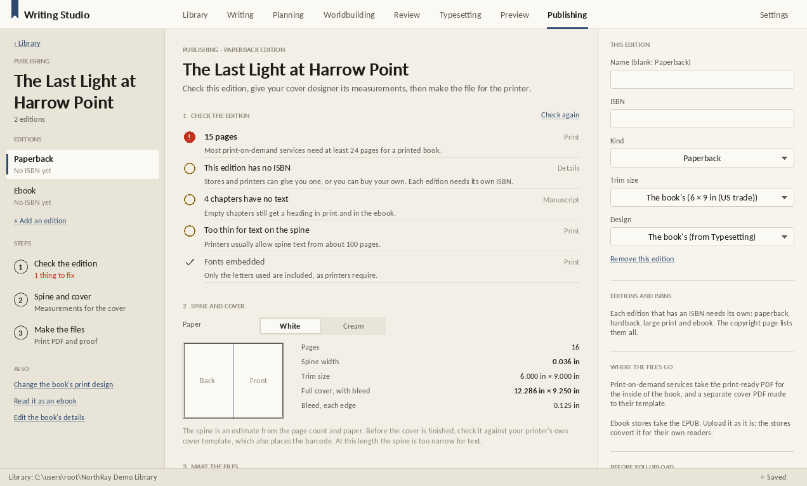

Writing and publishing
NorthRay Writing Studio
A writing and publishing studio for authors: worlds, series and books, through to finished editions.
NorthRay Software · Preview
Screenshots

The author library: worlds, series and books on a bookshelf. 
Planning: every chapter as a card, with status, viewpoint and word targets. 
Worldbuilding: the world's bible of characters, places, groups and lore. 
Review: what changed since a snapshot, word by word. 
Typesetting: the book laid out as printed pages. 
Publishing: a pre-flight check, spine width and print files for each edition.

About
NorthRay Writing Studio is a desktop app for writing and publishing books. It organises your work as worlds, series and books, and each book as parts, chapters and scenes, written in a calm, page-like editor that saves as you type, keeps earlier versions, and takes comments on the text. Pictures live in an artwork library, with crops and print-resolution checks that never touch the originals. Existing books can be imported from EPUB, Word, OpenDocument, HTML, Markdown and plain text, with PDF import as an experiment. Each book has a planning board, and each world keeps a bible of its characters, places and lore, showing where each appears in the books. Books are typeset into finished pages and previewed as an ebook on different devices, then exported as a print-ready PDF (PDF/X-1a) and an EPUB, after a pre-flight check that also gives the spine width for the cover. Everything stays on your PC; no account or subscription is needed.
What's in it
- IncludedAuthor Library: worlds, series, books
- IncludedManuscript editor: parts, chapters, scenes, versions
- IncludedImport: EPUB, Word, OpenDocument, HTML, Markdown, text (PDF experimental)
- IncludedArtwork and illustration control
- IncludedProfessional typesetting
- IncludedPrint and ebook previews
- IncludedEPUB and print-ready PDF export (first version)
- IncludedWorldbuilding: characters, places, lore and where they appear
- IncludedPlanning board: synopses, status, viewpoint, word targets
- IncludedReview: changes, snapshots, name checks, writing goals
- IncludedComments on the text
Features
- Author Library: worlds, series and books, with standalone and independent books
- Manuscript editor: parts, chapters and scenes, semantic paragraph styles, scene breaks, pictures and spell-check
- Saves as you type, keeps earlier versions of every chapter and scene, and a Trash you can restore from
- Artwork library: crop, size and align pictures without changing the originals, with print-resolution checks for your trim size
- Import from EPUB, Word (.docx), OpenDocument (.odt), HTML, Markdown and text; PDF import is experimental
- Reading order and chronological order for every series; drag and drop to organise
- Typesetting: justified, hyphenated pages with running heads and page numbers, shown as spreads, and exported as a PDF
- Worldbuilding: a bible of characters, places, groups, things, lore and events for each world, with relationships and the chapters each appears in
- Planning board: every chapter and scene as a card with its status, synopsis, viewpoint character, who appears in it, and word targets
- Review: compare any chapter with earlier versions or whole-book snapshots, check names against the world's bible, and track daily writing goals
- Comments: notes pinned to words in the text, resolved when they're dealt with, and listed for the whole book in Review
- Ebook preview on a phone, an e-reader and a tablet, with the reader's own text size, font and page colour
- Publishing: paperback, hardback, large-print and ebook editions with their own ISBNs; print-ready PDF/X-1a and EPUB 3 export, a pre-flight checklist, and spine and cover measurements
What's new
Version 0.33.0 · 2026-11-14
- Family trees: a character's page has a Family section with their parents, partners, brothers and sisters, and children (anyone sharing a parent counts as a brother or sister), with “+ Parent”, “+ Partner”, “+ Brother or sister” and “+ Child”: someone already in the bible, or a new character opened with its name ready to type.
- “See the family tree”: the whole family drawn by generation, partners side by side (two lines for a marriage), lines down to their children. Click anyone to open their page. A wide tree shrinks to fit; wider still, Shift and the mouse wheel move across it.
- Characters lists the bible's families (“The Wren family · 7”), each opening its tree. Families are named after the surname most of them share.
Version 0.32.1 · 2026-11-14
- A character's Race lists only your own races: the bible's Races and the races you've written on characters. There's no built-in list of elves, dwarves and so on any more.
- “New race…” in the Race list makes a race in the bible and opens it with its name ready to type.
Version 0.32.0 · 2026-11-14
- Entry pages in the world bible: each kind has its sections (a character: Appearance & personality, Backstory & goals, Abilities & powers, Age, birth & status). Written sections show on the page in full; the rest wait under “Still to write” — click one to write it in the panel.
- Change the sections every page of a kind has (“Change the sections every Character page has…”): one per line, for the whole world. Writing already in a section you take out stays on the page.
- Notes per book: what happens to an entry in each book, written for one book at a time and shown on its page under the book's name.
- A gallery in every entry: add pictures of it (art, sketches, references), caption them, and choose which is the main picture.
- Image boards inside entries: “+ New board” on an entry's page makes a board kept there, not in the sidebar. A board from the sidebar can be moved onto an entry's page from its panel (“Kept in”).
- Merging two copies of an entry keeps both sets of sections, pictures and book notes.
Version 0.31.0 · 2026-11-14
- The world bible tidies itself: copies of one entry (the same name, either apostrophe) are merged into one, keeping every name, detail, picture and relationship. The merged copies go to the Trash, so one can be brought back. A character and a creature of the same name become one character that is that creature.
- When a book joins a world, its own bible entries move into the world's bible (merging any it already has).
- Fixed: “Add to the bible” in Review › Names could add the same name again and again.
- “Check these kinds”: entries that look filed under the wrong kind are pointed out (Zornov's race is Demon, so Demon reads like a race), with “Make it a Race” or “Keep it”. Right-click any entry's card to change its kind.
- Creatures, one level at a time: each species as a card; click it for its kinds; click a kind for the named characters of that kind. A path back up at the top, “+ Add a kind”, and drag a card onto another to move it under it. A character can be a creature too (“A creature?” on its page).
- Bigger gender and sex signs on character cards and group headings.
- Publisher
- NorthRay Software
- Version
- 0.36.0
- Download
- 10.7 MB
- Requires
- Windows 10 or 11, 64-bit
- Account
- Not needed